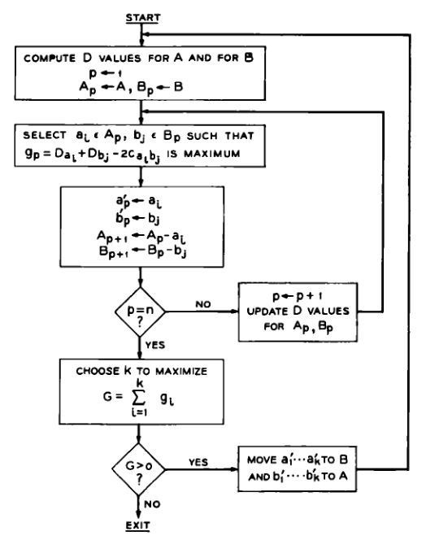

论文阅读 | KL算法：An Efficient Heuristic Procedure for Partitioning Graphs
今天要读的论文是大名鼎鼎的图划分算法——KL算法的原文：An Efficient Heuristic Procedure for Partitioning Graphs
Paper Link：https://ieeexplore.ieee.org/abstract/document/6771089
引言
问题是什么
本文所提出的是一个图划分算法。给定一个图，它的边带有权重。将的节点划分为数个子集，每个子集内包含的节点的权重之和不超过给定的最大值，同时要求划分后各子集之间的边权重之和最小。
更具体的，从数学形式上给出定义：
令\(G\)为一个有\(n\)个节点的图，其中第\(i\)个节点的权重为\(w_i(w_i > 0, i = 1, ... , n)\)。令\(p\)为一个正数，对于所有的\(i=1, ..., n\)，有\(0 < w_i \leq p\)。令\(C = (c_{ij})\)，其中\(i, j = 1, ..., n\)，表示图\(G\)的带权邻接矩阵。
令\(k\)为一个正整数。一个对图\(G\)的\(\pmb{k}\)路划分是\(G\)的一组非空且两两不相交的子集\(v_1, ..., v_k\)，且有\(\bigcup_{i=1}^{k}{v_i} = G\)。一个可接受的划分需要所有子集内的节点权重之和小于\(p\)，即： \[\lvert{v_i}\rvert \leq p \] 其中\(\lvert x \rvert\)表示集合\(x\)的大小，等于\(x\)的所有元素大小的和。一个划分的成本（cost） 指的是\(c_{ij}\)的和，其中\(i\)和\(j\)属于不同的子集。因此，成本是划分中所有外部成本的和，本文问题是要在满足上述要求的情况下，找到对图\(G\)成本最低的最优划分方案。
这个问题在许多显示场景下都有体现，例如将众多电子元件布置在印刷电路卡上，每个卡能容纳的电子元件有限，且卡与卡之间的连接成本较卡内连接要高，要尽可能减少电路卡之间的连接。还有一个场景是程序的分页。
本文所要解决的问题就是找到一种能够满足条件且成本最小化的划分方法。事实上，这个问题等价于另外三个问题：（1）由于总的边权重的值不变，最小化外部成本相当于最大化内部成本；（2）通过改变\(c_{ij}\)的符号，还可以实现最大化外部成本，同时也是最小化内部成本。
问题的难点
通常碰到这类问题，暴力穷举自然而然地就出现在我们的脑子里。但是考虑一个有\(n\)个节点，且每个节点权重为1的图\(G\)，将其划分为\(k\)个集合，每个集合大小为\(p\)（这里假设了\(kp=n\)）。在这样简明的情况下，包含的情况数为： \[ \frac{1}{k!} \left(\begin{matrix} n \\ p \end{matrix}\right) \left(\begin{matrix} n-p \\ p \end{matrix}\right) ... \left(\begin{matrix} 2p \\ p \end{matrix}\right) \left(\begin{matrix} p \\ p \end{matrix}\right) \] 进行穷举的复杂度高的难以接受。
从形式上看，这个问题也可以作为整数线性规划问题来解决，但这需要大量的约束方程来表达分区的均匀性，难度非常高。
似乎任何一个寻找最优解的方法都需要大量的计算，那么放弃确切的最优解，转而以较小运算量得到一个良好解的启发式算法似乎是更好的选择。为这类问题开发启发式算法的首要目标是找到一个功能强大，而且速度快到足以能运用在实际场景下的过程。时间复杂度不仅要考虑限制在指数级下，最要好限制在平方量级之内。
几个失败的尝试
- 随机算法：随机地生成解决方案，保留生成过程中的最好结果。时间复杂度\(O(n)\)，相当快，但由于最优解和接近最优解的解决方案很少，随机到该解决方案的概率很低，常常不能令人满意。
- 最大流最小割算法（Max Flow-Min Cut）：最大流最小割算法能够实现找到最小成本的无约束2路划分，但该算法没有限制结果子集的大小，而且难以扩展算法实现这一点。若要实现限制需要后处理，但若子集大小差异较大，则该算法不具备任何优点。
- 聚类算法：基于给定的成本矩阵识别自然聚类（natural matrix），但该方法也无法限制结果子集的大小。
- λ-Opting
2路均匀划分
最简单且最具代表性的划分问题莫过于2路均匀划分了，即将给定包含了\(2n\)个节点的图划分为两个分别包含了\(n\)个节点的子集，且使成本最小。解决这个问题将为更一般的图划分问题提供了基础。
基本思路
给定图\(S\)，假定\(A^{*}\)和\(B^{*}\)是最佳的2路划分。设\(A\)和\(B\)是一对任意的2路划分。那么很显然存在\(X\subset A\)，\(Y\subset B\)且\(\lvert{X}\rvert=\lvert{Y}\rvert\leq\frac{n}{2}\)使得\(X\)和\(Y\)交换后产生\(A^{*}\)和\(B^{*}\)。
因此，为了实现目标，我们可以从任意的2路均匀划分开始，依据当前状态通过一定的算法从\(A\)，\(B\)中选出\(X\)，\(Y\)并交换，以降低外部成本。迭代交换步骤直到不可再继续降低外部成本时，我们就得到了一个局部最优解。我们在后续会表明，这个局部最优解有很大概率是全局最优解。我们可以选取多个初始划分，重复多次上述过程，得到多个局部最优解以比较。
那么如何决定交换的集合\(X\)和\(Y\)呢？我们先给出一些定义：
- 对于任意\({a}\in{A}\)，其外部成本\({E_a}=\sum_{ y\in{B} }c_{ay}\)，内部成本\({I_a}=\sum_{ x\in{A} }c_{ax}\)。对任意\({b}\in{B}\)，同理定义\({E_b}\)和\({I_b}\)。
- 对所有\({z}\in{S}\)，有\(D_{z}=E_{z}-I{z}\)，\(D_{z}\)为该节点的外部成本与内部成本之差
以上述定义为基础，我们能给出如下定理：
定理1：对于任意的\({a}\in{A}\), \({b}\in{B}\)。若\(a\)和\(b\)交换，那么总体的外部成本减少量为\(D_a+D_b-2c_{ab}\)。
证明：令\(T\)为\(A\)和\(B\)之间除了\(a\)和\(b\)以外的的划分成本，则 \[T=z+E_a+E_b-c_{ab}\] 交换\(a\)和\(b\)，得到新的成本\(T'\)，则 \[T'=z+I_a+I_b+c_{ab}\] 因此划分成本的减少量为 \[T-T'=D_a+D_b-2c_{ab}\]
定理1就可以成为我们选择\(a\)和\(b\)的依据。
流程
本节阐述进行2路划分的算法流程：

- 对\(S\)内的每个节点计算其外部成本与内部成本之差，即\(D\)
- 选择\({a_i}\in{A}, {b_i}\in{B}\)使得下式最大，则交换\({a_i}\)和\({b_i}\)可以获得最大的划分成本减少量。将选出的\({a_i}\)和\({b_i}\)称作\(a'_{1}\)和\(b'_{1}\)，并暂时搁置 \[{g_1} = { D_{a_i} } + { D_{b_i} } - 2{ c_{ {a_i}{b_i} } }\]
- 对\(A-\{a_i\}\)和\(B-\{b_i\}\)的所有结点重新计算\(D\)，计算式如下（这是假设了\(a_i\)和\(b_i\)已经作了交换，证明比较简单，不再说明，实在不清楚可以翻阅原文）： \[D'_x = D_x + 2c_{ x{a_i} } - 2c_{ x{b_i} } \quad \quad x \in A-\{a_i\}\] \[D'_y = D_y + 2c_{ y{b_i} } - 2c_{ y{a_i} } \quad \quad x \in B-\{b_i\}\]
- 重复步骤2、3，继续挑选。要注意，每次选择出一对\(a'\)和\(b'\)，都需要将他们剔除，不再参与后续的选择。这样进行直到对整个\(S\)内的所有节点都完成选择后，得到\(a'_1\)和\(b'_1\)、...、\(a'_n\)和\(b'_n\)的节点对，与之对应的有\(g_1\)、...、\(g_n\)。
- \(g_1\)、...、\(g_n\)不一定全都是正数，选择一个值\(k\)，使得\(\sum_{i=1}^{k}{g_i} = G\)最大。此时，若\(G>0\)，交换\(X = \{ a'_1, ..., a'_k\}\)和\(Y = \{ b'_1, ..., b'_k \}\)可以使划分成本减小\(G\)。
- 此时得到一个新的划分，随后重新回到步骤1进行下一轮交换。重复这个过程直到\(G=0\)，此时便得到了一个局部最优划分。
上述算法流程可以从一个初始划分找到它的局部最优化分，我们称之为Phase 1 Optimal Partition。我们可以选择多从几个随机初始划分得到它们的Phase 1 Optimal Partition，或者进一步地优化Phase 1 Optimal Partition。
方法的有效性
Phase 1 Optimal Partition有几个特点：
- 寻常的方法是要交换\(A\)和\(B\)中的\(λ\)对顶点，这个\(λ\)是预先确定的数值。这会导致\(λ\)过小时效果不佳，但若增大\(λ\)会导致计算量急剧上升。而Phase 1 Optimal Partition的\(λ\)是动态变化的，尽可能地选择\(λ\)使得交换带来的提升足够大，同时计算速度也足够快。
- 前面有提到，并非每个\(g_i\)都是正数，但算法流程不会在遇到负的\(g_i\)时就终止。这就是说，Phase 1 Optimal Partition能找到一对交换集合，交换集合中的几个元素可能会导致划分成本的增大，但交换整个集合能够带来足够大的净收益。
我们知道Phase 1 Optimal Partition找到的是一个局部最优解，而为了探究局部最优解有多大概率为全局最优解，作者也进行了实验。文章在包括0-1矩阵、均匀分布的矩阵在内的多种矩阵上进行了实验，得到的结果比较相似。在\(30×30\)的矩阵上平均概率约为\(0.5\)，在\(60×60\)的矩阵上平均概率约为\(0.2 \sim 0.3\)，在\(120×120\)的矩阵上平均概率约为\(0.05 \sim 0.1\)。可以总结出一个大约的经验公式： \[p(n)=2^{\frac{-n}{30}}\]
运行时间分析
本节对方法的运行时间进行分析。我们对算法的各个步骤进行考察，分析每个过程的时间复杂度。要注意这里分析的只是对一次\(X\)和\(Y\)选定所需的时间（称之为1个pass），而不是从初始划分到局部最优解所需的时间。
第一次对所有节点的\(D\)值计算时，由于要遍历每一个节点到其余所有节点的边权重，因此该过程的时间复杂度为\(O(n^2)\)。
对于第\(i\)次更新D值，所需要的时间为\(n-i-1\)，因此整个流程中更新\(D\)值需要的总时间为 \[(n-1)+(n-2)+...+1\] 可以看出这部分的时间复杂度也是\(O(n^2)\)
对\(a_i, b_i\)对的选择是运行时间主要的组成部分。作者在每轮pass选择前，都会先对完成更新的\(D\)值进行排序，使得有 \[D_{a_1} \ge D_{a_2} \ge ... \ge D_{a_m} \\ D_{b_1} \ge D_{b_2} \ge ... \ge D_{b_m}\] 再按降序挑选节点。这样可以大幅度减少挑选时间，因为当选择到\({a_i}\)和\({b_j}\)时，若\(D_{a_i}+D_{b_j} \leq g_{max}\)时，则对于所有\(k \ge i, l \ge j\)，都不可能有\({ D_{a_k} } + { D_{b_l} } - 2{ c_{ {a_k}{b_l} } } \ge g_{max}\)（前提是\(c_{ij} \ge 0\)）。那么本轮对节点的遍历就可以提前终止了，由此可以节省大量的时间。由此，这部分主要的时间是由排序时间构成的： \[n \log n + (n-1) \log (n-1) + ... + 2 \log 2\] 时间复杂度为\(O(n^2 \log n)\)
当然我们可以牺牲一定的准确度，不用排序，使用更快的策略选择出节点点对。例如在更新\(D\)值时记录下拥有最大\(D_a\)和\(D_b\)的两个节点，直接作为本轮pass所选择的交换节点对。这个策略对于有稀疏邻接矩阵的图来说非常有效。可以在此基础上再做小小的扩展，把记录拥有第二大、第三大\(D_a\)和\(D_b\)也记录下来进行比较，那么就可以以较高的效率和准确率选择本轮需要的交换节点对。
综合以上分析，若在选择节点对使用排序策略，那么时间复杂度为\(O(n^2 \log n)\)；若使用快速扫描策略，则时间复杂度为\(O(n^2)\)。作为比较，穷举所有可能的交换集合所需要的时间为\(O(n^{\frac{3}{2}}4^n)\)。实验中，文章方法实际测得时间复杂度大约为\(O(n^{2.4})\)
优化Phase 1 Optimal Partition
我们知道Phase 1 Optimal Partition得到的结果是一个局部最优解，而非全局最优解。那么本节来讨论一下如何优化，使其得到的解有更高的概率成为全局最优解。在讲述之前需要强调，本节所提到的优化方法完全是基于实验发现，不具备完整的理论依据。
作者在实验中发现，当Phase 1 Optimal Partition的结果不是全局最优解时，往往有\(\lvert X \rvert=\lvert Y \rvert \approx \frac{n}{2}\)。这大致暗示了如果找到的\(\lvert X \rvert\)和\(\lvert Y \rvert\)明显小于\(\frac{n}{2}\)，则很大概率说明找到了全局最优解。
作者给出了一个启发式的方法，可以在对整个\(S\)进行Phase 1 Optimal Partition之前，对初始划分\(A\)和\(B\)分别做一次Phase 1 Optimal Partition，得到\(A \rightarrow\{A_1, A_2\},\quad B \rightarrow\{B_1, B_2\}\)。随后重新组合得到\(A_0={A_1}\cup{B_1},\quad B_0={A_2}\cup{B_2}\)，作为新的初始划分再进行Phase 1 Optimal Partition。很显然这个方法会引入额外的运行时间，但作者实验证明了这是值得的。
划分不同大小的集合
上述的Phase 1 Optimal Partition始终是将一个图\(S\)划分为两个相同大小的集合\((2×\frac{n}{2}=n)\)，但事实上很容易将方法拓展到划分不同大小集合\((n_1+n_2=n)\)。
不妨设\(n_1<n_2\)，我们只需要先向\(S\)中添加\((2×n_2-n)\)个“哑节点”，即没有任何边与之关联的节点。在后续的划分过程中，我们限定每轮交换的节点对数不能超过\(n_1\)。在Phase 1 Optimal Partition过程中，“哑节点”会被按需分配给两个划分子集，完成后去除“哑节点”，即可得到划分\(A\)和\(B\)。
不同权重的图节点
前面讨论的过程限制了每个节点的权重为1。我们可以将一个权重\(m>1\)的节点转化为由\(m\)个节点组成的集群，集群内部的每个节点间由极大权重的边互相关联，这样就可以放宽限制，使得有任意权重节点的图适用于Phase 1 Optimal Partition。但要注意到，随着各个节点的权重增大，Phase 1 Optimal Partition所要的时间也随之增大。
多路划分
上一章讨论了k路划分最具代表性的特殊情况——2路均匀划分，以及如何将其推广至划分不定大小集合和拥有不同权重图节点的情况。本章将继续拓展，讨论如何实现\(k\)路划分。
将问题缩小到2路划分
实现多路划分的基本思想是将一个图\(S\)随机初始划分为\(k\)个大小为\(n\)的子集，并且对所有子集两两成对，重复将2路划分应用于这些子集对上。当然这样的解决方法当然不是最优的，因为可能存在三个或三个以上子集之间的复杂交换以达成全局最优解。但在本文中没有实现的合理方法。
那么按照上述思路，一共有\(\left(\begin{matrix}k \\ 2 \end{matrix}\right)\)对子集需要进行2路划分，而且一个pass通常是不够的，因为对某一对子集进行优化往往会破坏另一对子集之间成本的最优性。但实验发现事实上需要的pass数并不大，在大部分情况下，2轮pass即可完成95%以上的优化，而剩余更多的迭代所能给予的成本减少量非常少。
初始划分
因为实现多路划分是将2路划分的思想应用于初始多路划分中，初始划分的重要性也就不言而喻了。找到一个好的初始划分不仅能减少系统成对优化的工作量，还能使达到最优解决方案的概率提升。作者给出了两个形成初始划分的方法：
- 给定一个图\(S\)，为了形成一个\(k\)路初始划分，先形成一个\(r\)路划分。对\(r\)路划分的每一个子集再做\(s\)路划分，以此类推直到形成\(k\)路划分（\(k=rs...\)）。注意每次划分都是有优化过程的。但是这种方法有缺陷：在首次\(r\)路划分会使各个子集的内部成本尽可能的高，这与各个子集后续的\(s\)路划分产生了冲突。这样经历几个层次的划分，可能导致一个相对较差的结果。
- 给定一个图\(S\)，它具有\(kn\)个节点。我们可以使用划分不同大小集合里的方法将它们划分为两个子集，其中一个包含\(n\)个节点，另一个包含\((k-1)n\)个节点。然后按照同样的方式继续对\((k-1)n\)个节点的子集继续划分，以此类推直到形成\(k\)个子集。
无论是完全随机生成初始划分，还是按照方法生成良好初始划分，后续都跟随着成对优化过程。平均而言，良好初始划分不太可能导致比随机初始划分更差的结果。需要额外计算量的良好初始划分，对系统运行时间和最终结果的影响是否合理，这取决于所研究的邻接矩阵类型。
不限制子集数量
前面所讨论的方法，都有一个限制：最终形成的子集数量为\(k\)个。上一章，我们为了把2路划分方法推广至具有划分不同大小集合的情况，引入了“哑节点”。这可以看作是一种松弛方法，允许通过扩展以获得较低成本的结果。
我们在此要放开限制，即不限制子集的数量（大于等于\(k\)），且每个子集内节点数最多为\(n\)个。这通常可以带来更低成本的划分结果。具体方法如下：
- 对一个图\(S\)，其内部节点数为\(kn\)，要求划分使得每个子集内节点数不得超过\(n\)个。首先不引入松弛，按照本章所提到的方法找到最优的划分方式，将其划分为\(k\)个子集。
- 引入\(n\)个“哑节点”，构成一个子集。再次对所有子集进行两两交换，得到最佳\((k+1)\)路划分。
- 若不存在某个子集内节点全为“哑节点”，重复步骤2，继续添加\(n\)个“哑节点”并交换优化。直到最终出现某个子集内节点全为“哑节点”时，结束。
- 去除最终结果每个子集内的“哑节点”，即可得到无子集数限制的最优多路划分。